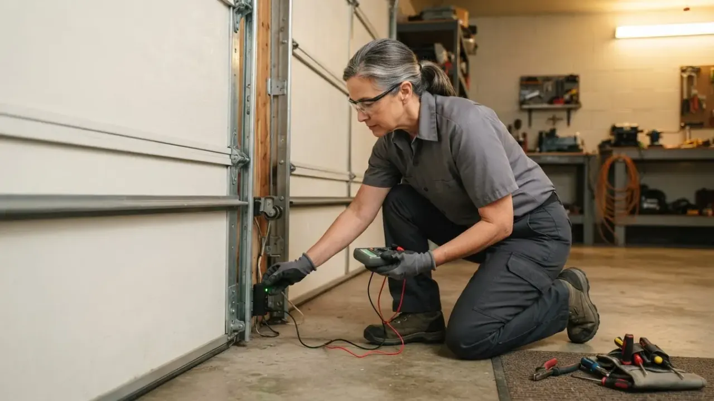

We test every spring, cable, roller and sensor before we leave
Garage Door Safety Inspection in Tampa
A safety inspection in Tampa is low-cost protection for the heaviest moving object in the home. A 200-pound door riding on a tired torsion spring can drop without warning. Springs, cables, rollers, tracks, hinges, photo eye sensors, and opener force settings are all checked, then a plain-English report is handed over. Never had a garage door safety check? Start here.
Live dispatcherUpfront optionsBacked workmanship
The basics
What Is Garage Door Safety Inspection?
A safety inspection checks the whole door system thoroughly, looking for hazards before they cause an injury or a breakdown. Springs, cables, tracks, rollers, and the opener are covered, along with the safety sensors and auto-reverse that stop the door when something is underneath. It is due once a year, after a storm, or when buying a home with an older door, and it ends with a written report: what is safe, what needs attention, and what should be fixed first.
What's included
What Is Included in the Inspection
Every safety inspection covers the full mechanical and electrical check of one door and its opener. Repairs found during the inspection are quoted separately, and the inspection fee is credited toward anything approved the same day.
Spring and Cable Test
Torsion spring tension is measured, extension springs are inspected for gaps and stretch, and galvanized steel cables are checked at the drums for fraying or rust. Springs and cables carry the full door weight, so most time is spent here.
Roller, Hinge and Track Check
Every roller is spun, every hinge is checked for play, and both tracks are inspected for bends, loose lag bolts, and alignment. The bottom rubber seal and weather seal are checked for gaps that let water and pests into the garage.
Opener Force and Travel Test
The opener is cycled under load, travel limits are verified, and the force setting is tested against the door weight. An opener pushing too hard is a safety risk and a sign the springs are failing. Settings are adjusted or the unit is flagged for repair.
Photo Eye and Auto-Reverse Test
Photo eye sensors are aligned, lenses are cleaned, and a blocking test confirms the door reverses within two inches of an obstruction, per the UL 325 safety standard. This is the single most important safety feature on the door.
Remote and Keypad Check
Every garage door remote and wall mount keypad is tested, batteries are replaced on the spot, and codes are reprogrammed when needed. A failing remote is diagnosed as remote or opener receiver before anything is bought.
Written Report With Photos
A written summary of everything checked comes with photos of any failed part and a ranked list of repairs with prices. No jargon, no pressure. When the door is safe, the report says so, and it is kept for records or a home sale.
Service overview
What a Garage Door Safety Inspection in Tampa Covers
A safety inspection in Tampa is a top-to-bottom mechanical and electrical test of the door and opener, not a quick visual glance. The door is cycled, spring tension is measured, torsion springs, extension springs, galvanized steel cables, and cable drums are inspected, then every nylon or steel roller, hinge, and track section is checked for wear. Photo eye sensors, the auto-reverse function, and the opener force limits are tested against the UL 325 safety standard. Anything that fails is flagged with a photo and a price to fix.
Doors in Tampa take a beating that northern doors never see. Bay salt air eats cables and hinges, summer heat turns garage door lubricant to gum, and afternoon storms knock out wall mount keypads and remotes. A door that shudders, squeals, or reverses halfway down is the cue to book. Same-day inspection appointments run across Hillsborough County, so nobody waits a week to learn whether the door is safe.

How we workWe verify the cause, compare realistic options, and confirm the repair before we leave.
The service timeline
How Our Inspection Process Works
An inspection follows a set order, though the door's condition shapes the details. Five steps carry it from the first look to the written report.
Walkthrough
It starts with the homeowner at the door. What has been noticed, how the door sounds, and when it last worked right are shown. Opener brand, door material, and the age of the hardware are noted. Two minutes of listening saves twenty minutes of guessing.
Balance and Spring Test
The opener is disconnected and the door is lifted by hand to check balance. A properly balanced door stays put at the halfway point. Torsion springs, cable drums, and winding cones are inspected, and galvanized steel cables are checked for fraying at the drum. This is where most failures hide.
Hardware and Track Check
Every hinge, roller, track bracket, and bottom rubber seal gets a look. Tracks are checked for bends and loose lag bolts, each roller is spun, and the weather seal at the floor is tested. Worn rollers and a misaligned track are a common cause of a noisy garage door.
Opener and Safety Test
The opener is tested under load, force settings are checked, and the photo eye sensors run through a blocking test. The auto-reverse is verified to trip within two inches of an obstruction, per the UL 325 safety standard. Remotes and wall mount keypads are tested too, and remote batteries are replaced on the spot when needed.
Report and Quote
A written summary arrives with photos of anything that failed, ranked by urgency. Repairs are priced on the spot, with no pressure and no upsell. When the door is safe and just needs lubricant, that is what is said. When it needs a spring, the number is known before a tool is touched.
Tools & methods
Tools and Methods We Use
An inspection is only as good as the gear behind it. These are the tools that let the job be done right the first time.
Garage door torsion spring winding bars
Torsion springs are released and re-tensioned safely during inspection and repair. Never improvise with a screwdriver; the bars are sized to the winding cone and keep the tech out of the spring's release path.
Garage door torque wrench
Hinge, bracket, and track bolts are torqued to spec instead of guessed by feel. Loose hardware is one of the most common findings on Tampa doors, and proper torque keeps the door square under load.
Garage door sensor alignment tool
The photo eye beam is lined up to hit the receiver square. Sensors out of line are the leading reason a door will not close, and setting them by eye usually means a callback.
Garage door roller removal tool
Worn rollers are swapped without bending the track or the hinge. Fast roller changes mean a full set of nylon rollers can be replaced during the same visit as the inspection.
Garage door opener remote tester
A remote is confirmed transmitting and the opener receiver is confirmed picking up the signal. It separates a dead remote from a failing logic board before money is spent on the wrong part.
Garage door cable drums and winding cones
Cable drums and winding cones are stocked on the truck for cable replacements. A frayed cable found during inspection is replaced the same day, with the drums reset and the door re-levelled.
Use cases
When to Schedule a Safety Inspection
Inspection calls in Tampa follow a few familiar patterns. These are two recent ones, and what each one turned up.

Blind Sensor Fixed in Westchase
A Westchase family could not close their door. The opener was fine, but one photo eye sensor was knocked out of alignment and the lens was coated in dust. The door would start down and reverse immediately. Both sensors were aligned with a sensor alignment tool, the lenses were cleaned, and the auto-reverse was re-tested.
Quieted a Noisy Door in Seminole Heights
A Seminole Heights bungalow had a door that squealed loud enough to wake the house. The inspection found flat-spotted nylon rollers, dry hinges, and a loose track bracket on one side. The opener was straining on every cycle. All the rollers were replaced, the track brackets were tightened and torqued, and the springs, hinges, and bearings were lubricated.
Booking questions
Who offers garage door safety inspections in Tampa?
We do, across Tampa and Hillsborough County, including South Tampa, Westchase, New Tampa, Brandon, Riverview and Temple Terrace. We are a garage door contractor (licence number available on request) with the tools and parts on the truck to fix what we find. Call us and we will get a same-day garage door safety inspection Tampa appointment on the schedule.
Problems we solve
Problems a Safety Inspection Catches Early
Most garage door failures warn weeks ahead that they are about to let go. A safety inspection in Tampa catches those signs while they are still cheap to fix.
Door shudders or jerks on the way up
Spring tension is measured, the cable drums are checked, and track alignment is inspected. When the spring is worn, it is replaced in matched pairs with the correct cycle rating and the door is rebalanced so it lifts smooth.
Opener runs but the door barely moves
The opener is disconnected, the door is tested by hand, and the cause is isolated. When it is the spring, it is replaced. When it is the opener gears or logic board, the repair or a new LiftMaster or Chamberlain unit is quoted.
Blinking safety sensor stops the door closing
Sensors are aligned with a sensor alignment tool, lenses are cleaned, wiring is checked, and the auto-reverse is re-tested. When a sensor has failed, it is replaced and the door is verified to close and reverse correctly.
Loud grinding or squealing on every cycle
Worn nylon or steel rollers are replaced, the springs, hinges, and bearings are lubricated with a lithium-based garage door lubricant, and the hardware is tightened. Most doors quiet down the same visit.
About this service
What is checked in a garage door safety inspection in Tampa?
We check springs, cables, drums, rollers, hinges, tracks, panels, weather seal and bottom rubber, then test the opener, remotes, keypad, photo eye sensors and auto-reverse. We measure door balance and opener force against the UL 325 safety standard. Anything worn or out of spec gets photographed and priced. You get a plain-English report, not a checklist of jargon.
What happens if my garage door fails a safety inspection in Tampa?
Nothing is forced on you. The technician explains what failed, why it matters, and what it would cost to fix, and you decide what to do next. A failed safety sensor or a broken spring should be fixed promptly, since those are real hazards. Less urgent wear, such as a roller that is starting to crack, can be scheduled for a later visit. You get the findings in writing either way.
Should I get a garage door safety inspection when buying a home in Tampa?
Yes, it is a good idea, especially if the door is older. A safety inspection checks the springs, cables, and sensors that a general home inspection often only looks at briefly. It can reveal a worn spring or a missing safety sensor before you move in, which gives you facts to discuss with the seller. The inspection is quick and the report tells you what is safe and what needs attention.
Can a safety inspection find problems that a tune-up would miss in Tampa?
A safety inspection and a tune-up overlap, but the inspection goes further on safety items such as the auto-reverse force, the photo-eye sensors, and the condition of the springs and cables under load. A tune-up focuses more on making the door run smoothly, with lubrication and adjustment. If your main concern is safety, for example with small children in the house, an inspection is the right visit to book.
What happens if my garage door fails the safety inspection?
The report will say exactly which test failed and why, and the fix is quoted separately. A failed sensor or auto-reverse is flagged as urgent, because the door is not safe to use until it is fixed, and you will be told not to use the door until the repair is done. A wear item, such as a fraying cable, is flagged as a repair to plan. Nothing is fixed without your agreement, and the price is agreed before any work starts.
What does a garage door safety inspection cover?
The inspection covers the springs, cables, rollers, hinges, and tracks, the balance of the door, and the safety systems: the photo eye sensors, the auto-reverse, the manual release, and the force settings. Each system is tested, not just looked at, and the results are written up in a report with anything that needs attention quoted. The inspection does not include repairs; any work found is quoted separately and agreed before it is done.
Is a garage door safety inspection required by law in Tampa?
There is no law that requires a homeowner to have a yearly inspection, but the safety standard UL 325 requires that every opener has working sensors and auto-reverse, and a door that does not meet that standard is not safe to use. Some home insurance policies and home sales also ask for an inspection. The yearly check is the practical way to make sure the door meets the standard and stays safe.
Pricing process
What a Safety Inspection Costs
$79 - $149 for a single-door inspection; repairs quoted separately from $185 to $900 depending on scope
Number of doors
One single-car door takes 45 to 60 minutes to inspect. A two-car or three-car garage with two openers runs closer to 90 minutes, which moves the price toward the top of the $79 to $149 range. The quote per door comes before work starts.
Door type and weight
A heavy insulated or custom wood door loads the springs and opener more, so balance and force take longer to measure. Standard steel doors inspect faster and sit at the lower end of the range.
Opener age and brand
Older openers and discontinued brands like some Craftsman and Linear models take longer to test and may need parts that have to be ordered. Current LiftMaster, Chamberlain, and Genie units are quick to diagnose and adjust.
Cost factors at a glance
| Cost factor | What affects the price |
|---|---|
| Typical range on this page | $79 - $149 for a single-door inspection; repairs quoted separately from $185 to $900 depending on scope |
| Number of doors | One single-car door takes 45 to 60 minutes to inspect. |
| Door type and weight | A heavy insulated or custom wood door loads the springs and opener more, so balance and force take longer to measure. |
| Opener age and brand | Older openers and discontinued brands like some Craftsman and Linear models take longer to test and may need parts that have to be ordered. |
Ranges are the ones stated on this page; you get a written estimate before work starts.
Cost questions
How much does a garage door safety inspection cost in Tampa?
Most inspections run $79 to $149 in 2026, and we credit that fee toward any repair you approve the same day. Cost depends on door count, whether you have one opener or two, and how much testing the hardware needs. A single-door inspection usually takes under an hour. If we find nothing wrong, you still get the written report and the peace of knowing your door is safe.
Customer reviews
What Tampa Customers Say
★★★★★
“I booked the inspection because the door was shuddering on the way down. The tech found a cable frayed at the drum and a torsion spring about to go. He had both on the truck and finished the repair the same visit. Door runs quieter than it has in years, and the price matched the quote.”
★★★★★
“Our opener kept reversing for no reason and I assumed we needed a new one. Turned out the photo eye sensors were misaligned and the force setting was off. The inspection took about an hour, cost less than I expected, and we avoided buying an opener we did not need. Honest work.”
★★★★★
“We were selling the house and the buyer wanted proof the garage door was safe. The report was detailed, with photos and the UL 325 reverse test noted. It helped close the deal. They also lubricated the springs and tightened the hinges while they were there. Worth every dollar.”
Book with confidence
What to Look for Before You Book
Before booking an inspection, a few simple checks keep a small visit from turning into a surprise bill.
- The licence number comes before any work starts, checked against the name on the quote.
- What the visit covers is asked before booking, so it is known whether springs, cables, rollers, and safety sensors are included, or only a quick lubrication.
- A written price comes before the visit, with an answer on what happens when the technician finds a part that needs replacing.
- Recent reviews are read, especially from customers who booked the same kind of visit.
- The findings are asked for in writing at the end of the visit, so there is a record of what was checked and what needs attention.
- A marked vehicle should arrive, with a technician who can say who they are and which company sent them.
The standard
UL 325 and Your Garage Door: The Safety Standard Explained
UL 325 is the safety standard that governs garage door openers in the United States, and it is the reason your door has the safety features it does. The standard requires that every opener installed since 1993 has photo eye sensors that reverse a closing door when the beam is broken, and an auto-reverse that reverses the door on contact. It also sets the rules for how the door must behave: it must reverse on contact with an obstruction, it must not close with the sensors bypassed, and it must have a manual release that works.
An inspection checks the door against that standard, not just against whether it opens and closes. The sensors are tested by breaking the beam, the auto-reverse is tested with a 2x4 laid flat, the manual release is tested, and the force settings are checked to make sure the door reverses with the right amount of pressure. If any of those tests fail, the door is not up to standard, and the inspection report will say so plainly, with the fix quoted. A door that passes is a door that meets the standard that was written to protect children and pets.
- Photo eye sensors: required since 1993, and must reverse a closing door when the beam is broken.
- Auto-reverse: the door must reverse on contact with an obstruction.
- Manual release: must work, so the door can be opened by hand in a power cut.
- Force settings: checked so the door reverses with the right amount of pressure.
- Tested, not assumed: the inspection tests each system rather than assuming it works.
How long things last
How often should I get a garage door safety inspection in Tampa?
Once a year is right for most Tampa homes, and every six months if you have a 15-year-old door or you use it more than six times a day. Salt air near the bay, summer heat and daily cycles all wear hardware faster here than up north. If your door shudders, squeals or reverses on its own, book a check now instead of waiting for the calendar.
Your report
After the Inspection: Understanding Your Report
An inspection ends with a report, and the report is written to be understood, not to impress. It lists what was checked, what passed, what needs attention, and what is urgent. The items are grouped so you can see at a glance what is a safety issue, what is a wear issue, and what is a recommendation. A safety issue, such as a sensor that does not reverse the door, is flagged as urgent, because it affects whether the door is safe to use. A wear issue, such as a roller that is starting to grind, is flagged as a repair to plan, because it will fail if it is left.
The report also gives you the numbers to decide. Each item that needs work is quoted, so you can see the cost of fixing it now against the cost of leaving it. And the report keeps a record: the date, the condition of each part, and what was done. That record is useful at sale time, and it is useful for warranty, because it shows the door has been inspected and maintained. If anything in the report is unclear, the technician will explain it before leaving, because a report you do not understand is not a useful report.
- What was checked: every item is listed, with what passed and what needs attention.
- Safety first: a failed sensor or auto-reverse is flagged as urgent, because it affects safety.
- Wear items: a grinding roller or a fraying cable is flagged as a repair to plan.
- Quoted: each item that needs work is priced, so you can decide with the numbers in front of you.
- A record: the report is kept, and it is useful at sale time and for warranty.
Related services
Related Services

Garage Door Repair
When an inspection turns up a failed part, the repair techs handle it the same visit. Bent tracks, broken hinges, dead openers, and damaged panels are fixed for Tampa homeowners, and the door is tested again before we leave so the fix is known to hold.Garage Door Spring Repair
Springs are the most common failure flagged during a safety inspection. Torsion and extension springs are replaced with the correct cycle rating for the door weight, using winding bars and a torque wrench, and the door is rebalanced so the opener is not fighting dead weight.
Garage Door Opener Repair
A safety inspection includes an opener force test. When a LiftMaster, Chamberlain, Genie, or Craftsman unit is running but not lifting, grinding, or losing its travel limits, the gears, logic board, or capacitor are diagnosed and repaired on the spot when parts allow.Ready when you are
Book Your Garage Door Safety Inspection in Tampa
A single visit tells whether the door is safe or one cycle from failing. A garage door contractor serving Tampa and Hillsborough County, licence number available on request, and the inspection fee is credited toward any repair approved the same day. Call now and get on today's route.

Talk with the local team
Request Garage Door Safety Inspection
Call, text or email and a real person answers, day or night. Tell us what the door is doing and we will give you a price range on the spot plus the soonest arrival window. Most calls placed before mid-afternoon get a same-day visit anywhere in Hillsborough County.